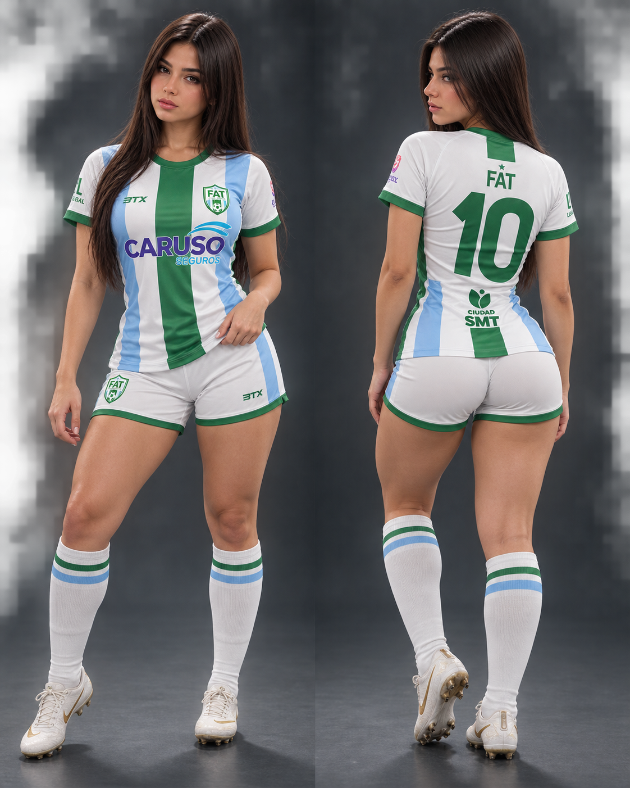

SELECCIONADOS OFICIALES · 2026
FÚTBOL
AMATEUR
TUCUMÁN.
Una identidad. Una provincia. La pasión de representar nuestros colores.
DESLIZÁ HACIA ABAJO
01 / CONCEPTO
EL FÚTBOL
QUE NOS UNE.
FAT es un proyecto dedicado a visibilizar el talento, el esfuerzo y la pasión del fútbol amateur tucumano.
02 / ESCENA
NUESTRAS
CANCHAS.
El fútbol amateur vive en los complejos y canchas donde se encuentran equipos, amistades e historias de nuestra provincia.
03 / IDENTIDAD
ORGULLO DE
REPRESENTAR.
En cada modalidad, jugadores y jugadoras comparten una misma identidad: compromiso con el deporte y con Tucumán.

04 / MODALIDADES
TRES FORMAS.
UNA PASIÓN.
05 / NUESTRA INDUMENTARIA
LOS COLORES
QUE NOS
REPRESENTAN.
Verde, blanco y celeste. Nuestra indumentaria representa identidad, pertenencia y el orgullo de llevar los colores de Tucumán.
JUGADORA · UNIFORME FAT

CAMISETA · FRENTE Y DORSO

06 / DOCUMENTACIÓN
CERTIFICADO
INSTITUCIONAL.
Un reconocimiento al talento, compromiso y dedicación de quienes son seleccionados para integrar FAT.

07 / ALIANZAS INSTITUCIONALES
SPONSORS
OFICIALES.
Marcas que acompañan y apoyan el crecimiento del fútbol amateur tucumano.


08 / SPONSOR
¿QUERÉS FORMAR PARTE
DEL SELECCIONADO
COMO SPONSOR?
Para solicitar propuesta comercial o recibir más información, comunicate por WhatsApp con cualquiera de estos dos contactos.